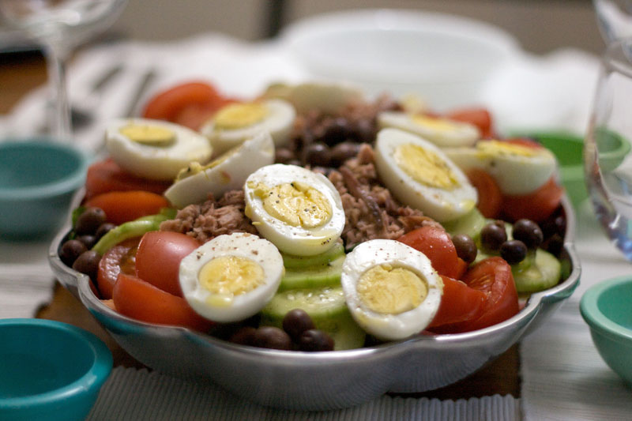

Home
Recette de la Salade Niçoise

Description
La salade niçoise est une salade traditionnelle française originaire
de la région de Nice. Elle est composée de légumes frais tels que
des tomates, des haricots verts, des œufs durs, des olives niçoises,
et du thon, le tout assaisonné d'une vinaigrette à base d'huile
d'olive et de vinaigre.
Ingrédients
- 200g de thon en conserve (de préférence au naturel)
- 4 œufs durs
- 200g de haricots verts frais ou surgelés
- 2 tomates mûres, coupées en quartiers
- 1 poivron rouge, coupé en lanières
- 100g d'olives niçoises
- 1 petit oignon rouge, finement tranché
- 100g de salade verte (laitue, roquette, etc.)
- 2 cuillères à soupe d'huile d'olive extra vierge
- 1 cuillère à soupe de vinaigre de vin rouge
- Sel et poivre au goût
- Quelques feuilles de basilic frais pour garnir (optionnel)
Instructions
- Faites cuire les haricots verts dans de l'eau bouillante salée
pendant 3-4 minutes jusqu'à ce qu'ils soient tendres mais encore
croquants. Égouttez-les et plongez-les dans de l'eau glacée pour
arrêter la cuisson. Égouttez à nouveau.
- Coupez les œufs durs en quartiers.
- Dans un grand saladier, disposez la salade verte comme base.
Ajoutez les tomates, le poivron, les haricots verts, les olives
niçoises, l'oignon rouge et le thon émietté.
- Préparez la vinaigrette en mélangeant l'huile d'olive, le vinaigre
de vin rouge, le sel et le poivre dans un petit bol.
- Versez la vinaigrette sur la salade et mélangez délicatement pour
bien enrober tous les ingrédients.
- Disposez les quartiers d'œufs durs sur le dessus de la salade.
Garnissez avec des feuilles de basilic frais si désiré.
- Servez immédiatement et dégustez cette délicieuse salade niçoise!